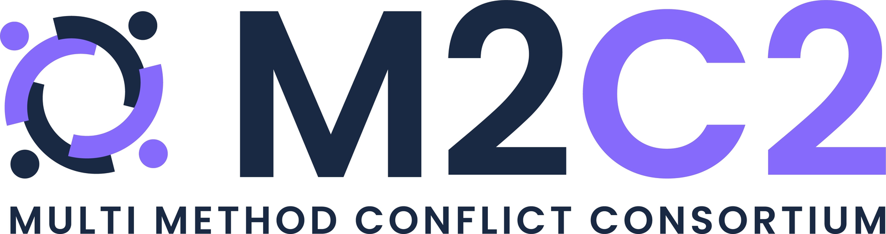

A diverse community of scholars drawing on a wide range of methods to produce cutting-edge research on political violence.
Bridging methodological divides in conflict research
Research on armed conflicts and political violence is methodologically diverse. Yet research communities tend to be siloed in their professional networks, training, and knowledge accumulation. Scholars working on the same questions from different methodological traditions rarely engage one another's arguments and evidence in depth.
The Multi-Method Conflict Consortium (M2C2) bridges quantitative, qualitative, and mixed-methods researchers at all career stages and from around the globe. The forum encourages scholars to learn from and engage with diverse approaches to conflict research, even if their own work is not multi-method in nature.
Professional networks
Organizing regular in-person conferences and workshops, gathering scholarship on conflict research from different methodological traditions.
Mixed-methods collaboration & mentorship
Fostering co-authorship connections and mentoring junior scholars through the M2C2 Fellows program.
Cross-method research ethics
Encouraging application of ethical research practices across methodological traditions, not within any single one.
Policy engagement & advocacy
Translating academic research for policymakers and advocating for discipline-wide policies that foster cross-method engagement.